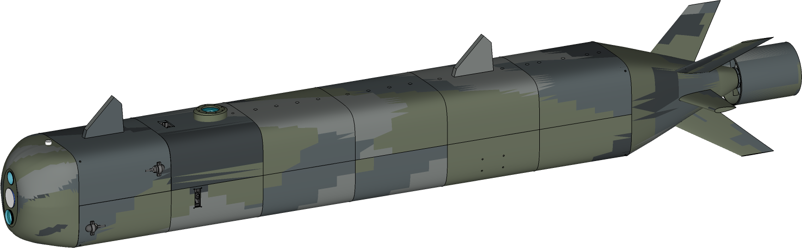
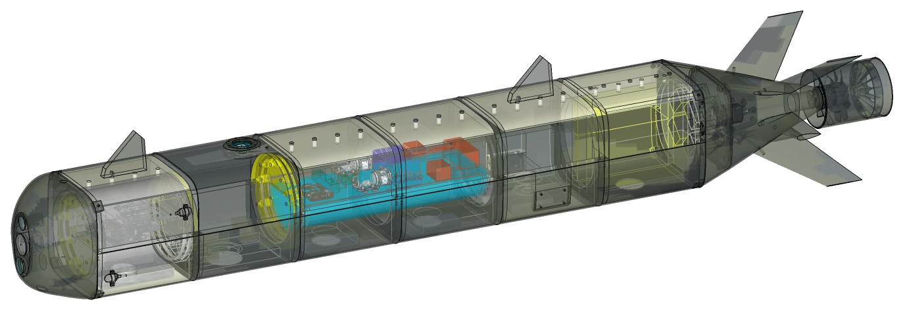
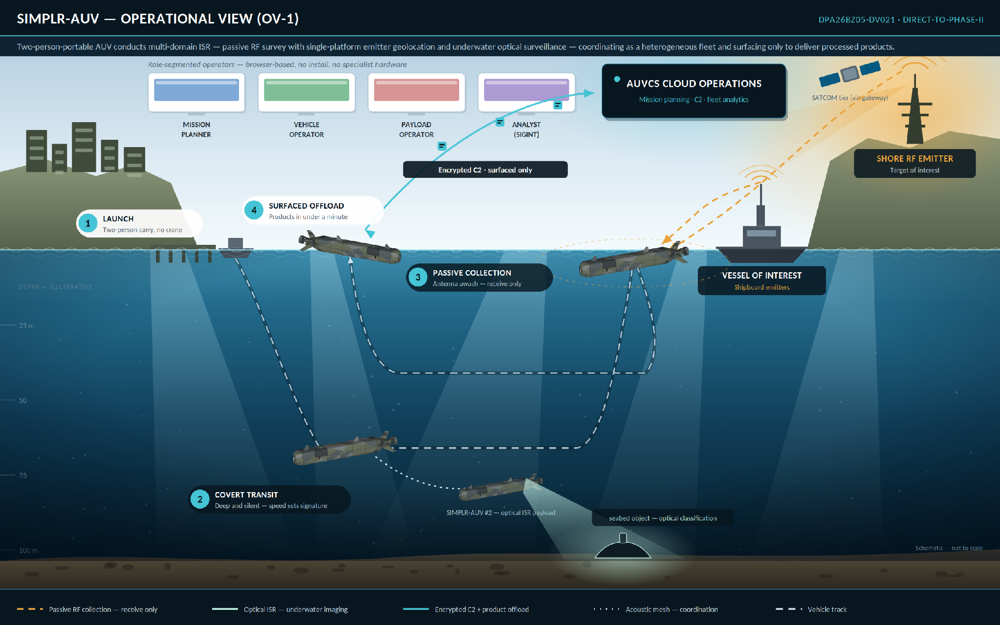
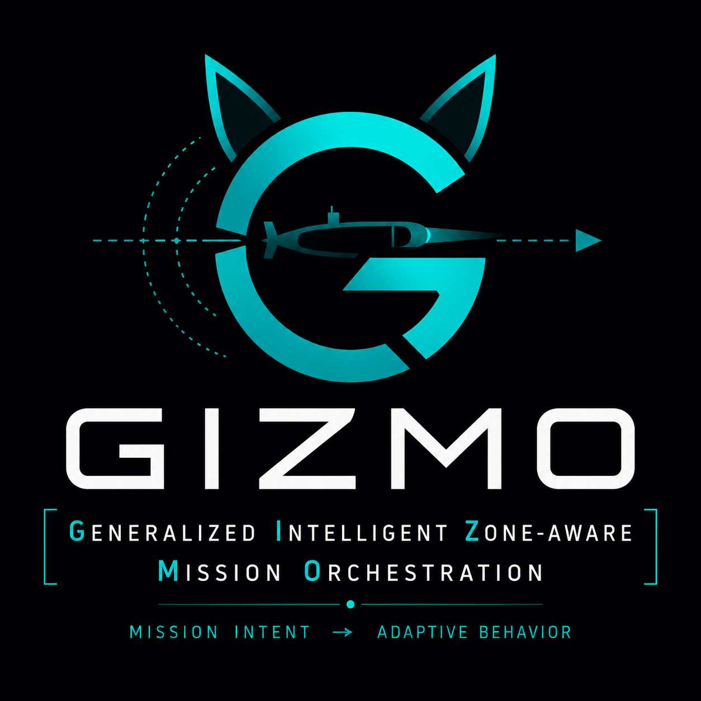
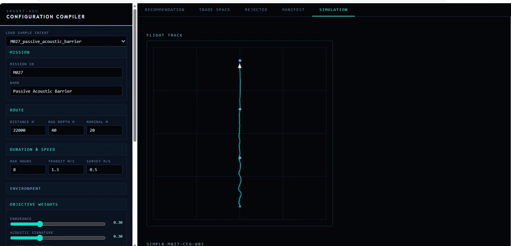
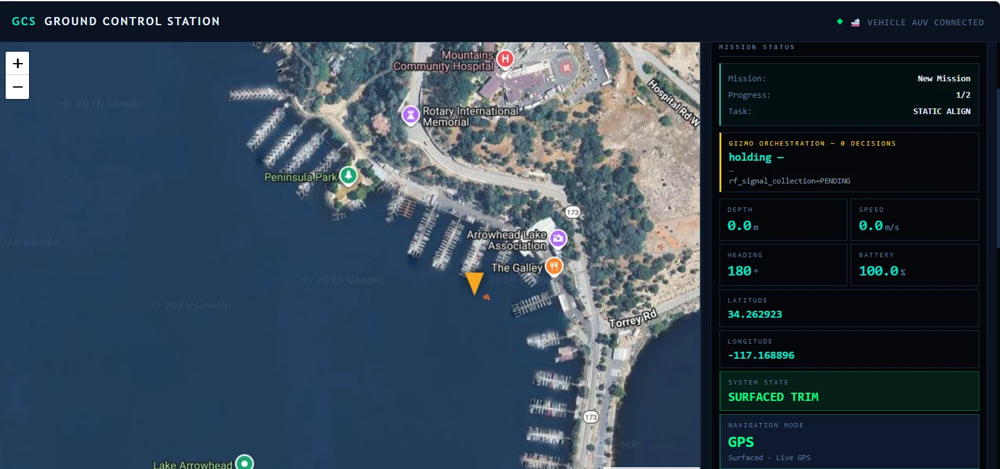

MULTI-SPECTRAL MARITIME RECONNAISSANCE
SIMPLR-AUV
Multi-Spectral. Autonomous.
A small autonomous underwater vehicle that swims the objective and collects the adversary's RF, acoustic, and visual picture — then brings it home. Silent the whole time, operators never exposed. Built on a modular, software-defined platform with deterministic mission orchestration and pre-deployment simulation.

A COMPLETE AUTONOMOUS MISSION SYSTEM
Mission Intent to Underwater Impact
Cognitive Vehicles integrates mission planning, vehicle configuration, simulation, autonomous execution, and post-mission analysis into one coherent system. SIMPLR-AUV is the first vehicle architecture built around that approach.
01PlanCOMPOSR turns tasking into a mission plan
→
02ConfigureCOMPILR selects a feasible configuration
→
03ValidateExercise the actual autonomy stack in simulation
→
04DeployExecute with SIMPLR-AUV
→
05AdaptGIZMO orchestrates mission behavior
→
06AnalyzeTurn mission data into engineering evidence
THE SIMPLR-AUV PLATFORM
Low Cost. Attritable. Built for the Mission.
SIMPLR-AUV is built to be sent where crewed platforms should not go. Its outer hull is 3-D printed and its electronics, sensors, and energy are commercial off-the-shelf, so vehicles can be built quickly, fielded in numbers, and risked on the mission rather than protected from it.
A free-flooding outer hull carries two watertight electronics cylinders and a wet-mounted, pressure-tolerant energy module, with common power, network, and mechanical interfaces between mission sensing, vehicle management, payloads, and energy.
- Low cost and attritable by design
- Commercial off-the-shelf electronics and sensors
- 3-D printed outer hull
- Interchangeable mission payload interfaces
- Software-defined capability, rapidly reconfigured

~85 inLength
~8 inDiameter
60 mDesign depth
24+ hEndurance target
0.6–2.0 m/sSpeed range
THE FLAGSHIP MISSION
Find, then fix — with no one in the threat ring.
SIMPLR-AUV conducts maritime reconnaissance across three modalities at once. It surveys an objective wide and silent to find every contact of interest, the operator designates the ones that matter, and the vehicle returns to collect them in full for exploitation — all from an unmanned platform, with the crew kept well outside the objective.

Passive RF Reconnaissance
Detects, identifies, and geolocates the radios, networks, and links at an objective from a single platform — receive-only, antenna awash, nothing radiated. Communications nets are mapped, their users counted, and the site's outside connections found.
Acoustic and Sonar
Listens for running machinery and propulsion — including the low-signature semi-submersibles and narco-submarines that evade other sensors — and closes on what it hears with sonar to find, measure, and map the vessel and the structures around it.
Underwater Video
Closes on the vessel the sonar has found and images it pass by pass at close range, delivering visual confirmation fused with the RF and acoustic picture.
Deniable emplacementDormant until taskedZero emissions on surveyOperator-designated targetsExfil over WiFi / LTE
FORCE ASSESSMENT
Know who is there before you go in.
SIMPLR-AUV turns a reconnaissance sortie into an assessment the team can act on: how many are at the objective, how they are organized, where they were, what warning they have, and how they can call for help — delivered with the crew still well outside the threat ring.
Personnel on the Net
Identifies and counts the individual radio users at the objective, each tracked over the course of the sortie.
Command Structure
Separates the networks they talk on, revealing how the group is organized and the infrastructure that ties it together.
Positions Over Time
Shows where each user was each time they were heard, so posts, patrols, and movement stand out on the map.
Early Warning
Locates remote sensors and alarms guarding the approaches, so the team knows what will see them coming.
Outside Connections
Finds the satellite and network links the site uses to report out or call for reinforcement.
The Vessel Itself
Locates and images the vessel or object of interest, fused with everything heard around it into one product.
Personnel countedNets separatedPositions over timeEarly warning foundStates what it cannot see
8 / 8Emitters located
0Emissions on survey
4 / 4Targets collected
3Collection modalities
1Sortie, find to fix
GIZMO MISSION ORCHESTRATION
Mission intent becomes adaptive behavior.
GIZMO evaluates mission objectives, operating zones, vehicle state, observations, and available capabilities to determine what the vehicle should do next. Its mission logic is deterministic, auditable, and subordinate to independent vehicle-safety functions.
DeterministicExplainableBoundedReplayable


COMPILR CONFIGURATION COMPILER
Mission intent becomes a validated vehicle definition.
COMPILR evaluates mission objectives and hard constraints, screens candidate configurations, solves mass and trim properties, ranks feasible options, and validates the selected configuration through the same simulation environment used by the autonomy stack.
The public site describes COMPILR's function and engineering role without exposing its internal scoring, implementation details, or private source.
THE SIMULATED WORLD
Every mission flown before it is launched.
SIMPLR-AUV comes with a complete simulated world. The vehicle's own flight software runs unchanged against it — the same code that goes in the water — fed sensor data so faithful the vehicle cannot tell the simulation from the sea. Missions are rehearsed, stressed, and scored against ground truth before a vehicle ever gets wet.
Real Charts and Depths
Missions are built and flown over real nautical charts and seafloor depth data for the area of operations.
A Living RF Environment
Radios, networks, sensors, and satellite links on the air the way a real site would put them there — for the vehicle to find.
Acoustics, Sonar, and Video
Machinery noise, sonar returns from vessels and piers, and camera imagery, all from the vehicle's true position.
Navigation and Faults
Navigation sensors, GPS loss, sensor failures, and communications outages injected on purpose to prove the vehicle copes.
Scored Against Truth
Randomized scenarios run by the dozen, every result scored against what was really there — evidence, not anecdotes.
Train as You Fight
Operators plan, monitor, and analyze simulated missions on the same stations they use for real ones.
ROLE-BASED OPERATOR STATIONS
One environment from tasking through analysis.
The operator suite is browser delivered and organized by role, each station speaking the same mission vocabulary as the vehicle. From the tasking order to the finished assessment, every step has its station.
COMPOSR
Turns a tasking order into a complete mission plan over real charts — where to search, where to listen, how to get there and back — and says plainly what it can and cannot do.
Mission Planner
The mission planner's station: review and shape objectives, routes, communications, and investigations before launch.
COMPILR
Turns the mission into a validated vehicle: the right payloads, mass, and trim for the job, proven in simulation.
Ground Control Station
The vehicle operator's station: live state, mission progress, and approvals when the vehicle asks.
Analysis Stations
The analyst's stations: signal analysis, sonar and video review, and the fused product with its force assessment.
Mission Evidence
Every sortie logged and replayable, so performance is measured, not asserted.



OPEN SYSTEMS ENGINEERING
Capability should be replaceable without rebuilding the vehicle.
SIMPLR separates mission orchestration, guidance, navigation and control, hardware abstraction, payload services, and cloud operations so each layer can evolve independently.
Mission Layer
Objectives, operating zones, policy, and GIZMO orchestration.
Behavior Layer
Guidance plugins and mission tasks with bounded completion logic.
Vehicle Layer
Navigation, control, obstacle avoidance, and independent safety functions.
Platform Layer
Hardware abstraction, vehicle sensors, actuators, and common interfaces.
Payload Layer
Interchangeable RF, acoustic, optical, environmental, and future mission payloads — re-roled by module swap in under a day.
Simulation Layer
The production autonomy stack runs against simulation or physical hardware through the same abstraction boundary.
DEVELOPMENT STATUS
Software-first, evidence-driven development.
The autonomy stack, GIZMO, browser mission environment, and configuration tooling are being developed and exercised through simulation and hardware-in-the-loop workflows. Prototype vehicle hardware is in development; vehicle-level performance claims remain targets until controlled physical testing is complete.
ABOUT COGNITIVE VEHICLES
Autonomous systems built around mission reasoning.
Cognitive Vehicles LLC develops autonomous vehicle architectures, mission software, modular payload integration, simulation, and undersea robotic systems. SIMPLR-AUV is the company's principal development platform for mission-defined autonomy and rapidly reconfigurable underwater capability.
A MORE KNOWLEDGEABLE OCEAN
Build the next mission capability.
For research, integration, teaming, and program inquiries, contact Cognitive Vehicles LLC.
wayne@simplr-auv.comWayne Folsom · Founder & CEO
wayne@simplr-auv.com · (949) 436-8704